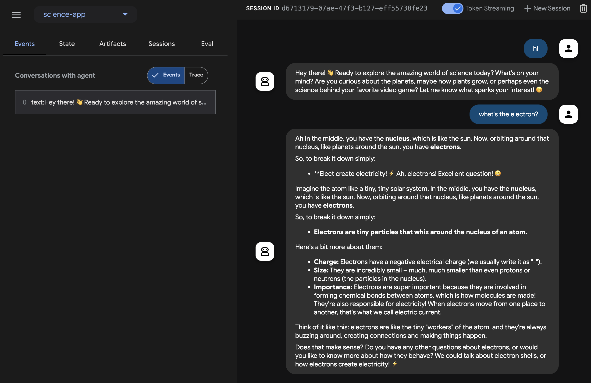

Javaでストリーミングエージェントを構築する¶
このクイックスタートガイドでは、基本的なエージェントを作成し、Java で ADK ストリーミングを活用して、低遅延（Low-latency）の双方向音声インタラクションを実現する手順を説明します。
まず、Java と Maven の環境を設定し、プロジェクト構造を整理して、必要な依存関係を定義します。その後、シンプルな ScienceTeacherAgent を作成し、Dev UI を使用してテキストベースのストリーミング機能をテストします。さらに、ライブオーディオ通信を有効にして、エージェントを対話型の音声駆動アプリケーションへと進化させます。
最初のエージェントを作成する¶
前提条件¶
-
このスタートガイドでは、Java でプログラミングを行います。マシンに Java がインストールされていることを確認してください。理想的には Java 17 以上を使用する必要があります（java -version と入力して確認できます）。
-
Java 用の Maven ビルドツールも使用します。先に進む前に、Maven がインストールされていることを確認してください（Cloud Top や Cloud Shell の場合はインストール済みですが、ご自身のノート PC の場合はインストールが必要かもしれません）。
プロジェクト構造の準備¶
ADK Java を使い始めるために、以下のディレクトリ構造を持つ Maven プロジェクトを作成しましょう。
インストール (Installation) ページの指示に従って pom.xml を追加し、ADK パッケージを使用できるようにしてください。
Note
プロジェクトのルートディレクトリには、好きな名前を使用できます（adk-agents でなくても構いません）。
コンパイルの実行¶
コンパイルを実行して（mvn compile コマンド）、Maven がこのビルドを正常に処理できるか確認してみましょう。
$ mvn compile
[INFO] Scanning for projects...
[INFO]
[INFO] --------------------< adk-agents:adk-agents >--------------------
[INFO] Building adk-agents 1.0-SNAPSHOT
[INFO] from pom.xml
[INFO] --------------------------------[ jar ]---------------------------------
[INFO]
[INFO] --- resources:3.3.1:resources (default-resources) @ adk-demo ---
[INFO] skip non existing resourceDirectory /home/user/adk-demo/src/main/resources
[INFO]
[INFO] --- compiler:3.13.0:compile (default-compile) @ adk-demo ---
[INFO] Nothing to compile - all classes are up to date.
[INFO] ------------------------------------------------------------------------
[INFO] BUILD SUCCESS
[INFO] ------------------------------------------------------------------------
[INFO] Total time: 1.347 s
[INFO] Finished at: 2025-05-06T15:38:08Z
[INFO] ------------------------------------------------------------------------
プロジェクトのコンパイル設定は適切に行われているようです！
エージェントの作成¶
src/main/java/agents/ ディレクトリの下に、以下の内容で ScienceTeacherAgent.java ファイルを作成します。
package samples.liveaudio;
import com.google.adk.agents.BaseAgent;
import com.google.adk.agents.LlmAgent;
/** 理科の先生エージェント */
public class ScienceTeacherAgent {
// Dev UI がエージェントを動的にロードするために期待するフィールド
// (エージェントは宣言時に初期化される必要があります)
public static final BaseAgent ROOT_AGENT = initAgent();
// Live API をサポートする最新のモデル ID を次のドキュメントで確認してください。
// https://google.github.io/adk-docs/get-started/streaming/quickstart-streaming/#supported-models
public static BaseAgent initAgent() {
return LlmAgent.builder()
.name("science-app")
.description("Science teacher agent")
.model("...") // Live API 用の最新モデル ID を入力してください。
.instruction("""
You are a helpful science teacher that explains
science concepts to kids and teenagers.
""")
.build();
}
}
後ほど Dev UI を使用してこのエージェントを実行します。ツールがエージェントを自動的に認識するためには、その Java クラスが以下の 2 つのルールに準拠している必要があります。
- エージェントは、BaseAgent 型の ROOT_AGENT という名前のグローバルな public static 変数に格納され、宣言時に初期化されている必要があります。
- エージェントの定義は、動的コンパイルクラスローダーによるクラス初期化中にロードできるように、static メソッドである必要があります。
Dev UI でエージェントを実行する¶
Dev UI は、エージェント用の UI アプリケーションを自作することなく、開発目的でエージェントを迅速に実行およびテストできる Web サーバーです。
環境変数の定義¶
サーバーを実行するには、2 つの環境変数をエクスポートする必要があります。
- Gemini キー（AI Studio から取得できます）
- 今回は Vertex AI を使用しないことを指定する変数
Dev UI の実行¶
ターミナルから以下のコマンドを実行して、Dev UI を起動します。
mvn exec:java \
-Dexec.mainClass="com.google.adk.web.AdkWebServer" \
-Dexec.args="--adk.agents.source-dir=." \
-Dexec.classpathScope="compile"
ステップ 1: ブラウザで、表示された URL（通常は http://localhost:8080 または http://127.0.0.1:8080）を直接開きます。
ステップ 2: UI の左上にあるドロップダウンでエージェントを選択できます。「science-app」を選択してください。
トラブルシューティング (Troubleshooting)
ドロップダウンメニューに「science-app」が表示されない場合は、mvn コマンドを maven プロジェクトのルートから実行しているか確認してください。
注意: ADK Web は開発用途限定
ADK Web は本番デプロイでの利用を想定していません。 ADK Web は開発とデバッグ用途でのみ使用してください。
音声とビデオで Dev UI を試す¶
お好みのブラウザで、以下にアクセスしてください: http://127.0.0.1:8080/
以下のようなインターフェースが表示されるはずです。

マイクボタンをクリックして音声入力を有効にし、What's the electron?（電子って何？）のような質問を音声でしてみてください。リアルタイムで音声回答が返ってきます。
ビデオを試すには、Web ブラウザをリロードしてカメラボタンをクリックし、ビデオ入力を有効にして「何が見えますか？」と質問してください。エージェントはビデオ入力で見えている内容を回答します。
注意事項¶
- native-audio モデルではテキストチャットを使用できません。
adk webでテキストメッセージを入力するとエラーになる場合があります。
ツールの停止¶
コンソールで Ctrl-C を押してツールを停止します。
カスタムライブオーディオアプリでエージェントを実行する¶
今度は、エージェントとカスタムライブオーディオアプリケーションを使用して、オーディオストリーミングを試してみましょう。
Live Audio 用の Maven pom.xml ビルドファイル¶
既存の pom.xml を以下の内容に置き換えてください。
<?xml version="1.0" encoding="UTF-8"?>
<project xmlns="http://maven.apache.org/POM/4.0.0"
xmlns:xsi="http://www.w3.org/2001/XMLSchema-instance"
xsi:schemaLocation="http://maven.apache.org/POM/4.0.0 http://maven.apache.org/xsd/maven-4.0.0.xsd">
<modelVersion>4.0.0</modelVersion>
<groupId>com.google.adk.samples</groupId>
<artifactId>google-adk-sample-live-audio</artifactId>
<version>0.1.0</version>
<name>Google ADK - Sample - Live Audio</name>
<description>
ADK を使用したライブオーディオ会話を実演するサンプルアプリケーションです。
samples.liveaudio.LiveAudioRun 経由で実行可能です。
</description>
<packaging>jar</packaging>
<properties>
<project.build.sourceEncoding>UTF-8</project.build.sourceEncoding>
<java.version>17</java.version>
<auto-value.version>1.11.0</auto-value.version>
<!-- exec-maven-plugin 用のメインクラス -->
<exec.mainClass>samples.liveaudio.LiveAudioRun</exec.mainClass>
<google-adk.version>0.1.0</google-adk.version>
</properties>
<dependencyManagement>
<dependencies>
<dependency>
<groupId>com.google.cloud</groupId>
<artifactId>libraries-bom</artifactId>
<version>26.53.0</version>
<type>pom</type>
<scope>import</scope>
</dependency>
</dependencies>
</dependencyManagement>
<dependencies>
<dependency>
<groupId>com.google.adk</groupId>
<artifactId>google-adk</artifactId>
<version>${google-adk.version}</version>
</dependency>
<dependency>
<groupId>commons-logging</groupId>
<artifactId>commons-logging</artifactId>
<version>1.2</version> <!-- 親 POM で定義されている場合はプロパティを使用してください -->
</dependency>
</dependencies>
<build>
<plugins>
<plugin>
<groupId>org.apache.maven.plugins</groupId>
<artifactId>maven-compiler-plugin</artifactId>
<version>3.13.0</version>
<configuration>
<source>${java.version}</source>
<target>${java.version}</target>
<parameters>true</parameters>
<annotationProcessorPaths>
<path>
<groupId>com.google.auto.value</groupId>
<artifactId>auto-value</artifactId>
<version>${auto-value.version}</version>
</path>
</annotationProcessorPaths>
</configuration>
</plugin>
<plugin>
<groupId>org.codehaus.mojo</groupId>
<artifactId>build-helper-maven-plugin</artifactId>
<version>3.6.0</version>
<executions>
<execution>
<id>add-source</id>
<phase>generate-sources</phase>
<goals>
<goal>add-source</goal>
</goals>
<configuration>
<sources>
<source>.</source>
</sources>
</configuration>
</execution>
</executions>
</plugin>
<plugin>
<groupId>org.codehaus.mojo</groupId>
<artifactId>exec-maven-plugin</artifactId>
<version>3.2.0</version>
<configuration>
<mainClass>${exec.mainClass}</mainClass>
<classpathScope>runtime</classpathScope>
</configuration>
</plugin>
</plugins>
</build>
</project>
Live Audio Run ツールの作成¶
src/main/java/ ディレクトリの下に、以下の内容で LiveAudioRun.java ファイルを作成します。このツールは、ライブオーディオ入出力を使ってエージェントを実行します。
package samples.liveaudio;
import com.google.adk.agents.LiveRequestQueue;
import com.google.adk.agents.RunConfig;
import com.google.adk.events.Event;
import com.google.adk.runner.Runner;
import com.google.adk.sessions.InMemorySessionService;
import com.google.common.collect.ImmutableList;
import com.google.genai.types.Blob;
import com.google.genai.types.Modality;
import com.google.genai.types.PrebuiltVoiceConfig;
import com.google.genai.types.Content;
import com.google.genai.types.Part;
import com.google.genai.types.SpeechConfig;
import com.google.genai.types.VoiceConfig;
import io.reactivex.rxjava3.core.Flowable;
import java.io.ByteArrayOutputStream;
import java.io.InputStream;
import java.net.URL;
import javax.sound.sampled.AudioFormat;
import javax.sound.sampled.AudioInputStream;
import javax.sound.sampled.AudioSystem;
import javax.sound.sampled.DataLine;
import javax.sound.sampled.LineUnavailableException;
import javax.sound.sampled.Mixer;
import javax.sound.sampled.SourceDataLine;
import javax.sound.sampled.TargetDataLine;
import java.util.UUID;
import java.util.concurrent.ExecutorService;
import java.util.concurrent.ConcurrentHashMap;
import java.util.concurrent.ConcurrentMap;
import java.util.concurrent.Executors;
import java.util.concurrent.Future;
import java.util.concurrent.TimeUnit;
import java.util.concurrent.atomic.AtomicBoolean;
import agents.ScienceTeacherAgent;
/** 音声会話のために {@link LiveAudioAgent} を実行するデモ用メインクラスです。 */
public final class LiveAudioRun {
private final String userId;
private final String sessionId;
private final Runner runner;
private static final javax.sound.sampled.AudioFormat MIC_AUDIO_FORMAT =
new javax.sound.sampled.AudioFormat(16000.0f, 16, 1, true, false);
private static final javax.sound.sampled.AudioFormat SPEAKER_AUDIO_FORMAT =
new javax.sound.sampled.AudioFormat(24000.0f, 16, 1, true, false);
private static final int BUFFER_SIZE = 4096;
public LiveAudioRun() {
this.userId = "test_user";
String appName = "LiveAudioApp";
this.sessionId = UUID.randomUUID().toString();
InMemorySessionService sessionService = new InMemorySessionService();
this.runner = new Runner(ScienceTeacherAgent.ROOT_AGENT, appName, null, sessionService);
ConcurrentMap<String, Object> initialState = new ConcurrentHashMap<>();
var unused =
sessionService.createSession(appName, userId, initialState, sessionId).blockingGet();
}
private void runConversation() throws Exception {
System.out.println("Initializing microphone input and speaker output...");
RunConfig runConfig =
RunConfig.builder()
.setStreamingMode(RunConfig.StreamingMode.BIDI)
.setResponseModalities(ImmutableList.of(new Modality("AUDIO")))
.setSpeechConfig(
SpeechConfig.builder()
.voiceConfig(
VoiceConfig.builder()
.prebuiltVoiceConfig(
PrebuiltVoiceConfig.builder().voiceName("Aoede").build())
.build())
.languageCode("en-US")
.build())
.build();
LiveRequestQueue liveRequestQueue = new LiveRequestQueue();
Flowable<Event> eventStream =
this.runner.runLive(
runner.sessionService().createSession(userId, sessionId).blockingGet(),
liveRequestQueue,
runConfig);
AtomicBoolean isRunning = new AtomicBoolean(true);
AtomicBoolean conversationEnded = new AtomicBoolean(false);
ExecutorService executorService = Executors.newFixedThreadPool(2);
// マイク入力をキャプチャするタスク
Future<?> microphoneTask =
executorService.submit(() -> captureAndSendMicrophoneAudio(liveRequestQueue, isRunning));
// エージェントの応答を処理し、オーディオを再生するタスク
Future<?> outputTask =
executorService.submit(
() -> {
try {
processAudioOutput(eventStream, isRunning, conversationEnded);
} catch (Exception e) {
System.err.println("Error processing audio output: " + e.getMessage());
e.printStackTrace();
isRunning.set(false);
}
});
// ユーザーが Enter を押して会話を停止するのを待機
System.out.println("Conversation started. Press Enter to stop...");
System.in.read();
System.out.println("Ending conversation...");
isRunning.set(false);
try {
// 進行中の処理が完了するまで少し待機
microphoneTask.get(2, TimeUnit.SECONDS);
outputTask.get(2, TimeUnit.SECONDS);
} catch (Exception e) {
System.out.println("Stopping tasks...");
}
liveRequestQueue.close();
executorService.shutdownNow();
System.out.println("Conversation ended.");
}
private void captureAndSendMicrophoneAudio(
LiveRequestQueue liveRequestQueue, AtomicBoolean isRunning) {
TargetDataLine micLine = null;
try {
DataLine.Info info = new DataLine.Info(TargetDataLine.class, MIC_AUDIO_FORMAT);
if (!AudioSystem.isLineSupported(info)) {
System.err.println("Microphone line not supported!");
return;
}
micLine = (TargetDataLine) AudioSystem.getLine(info);
micLine.open(MIC_AUDIO_FORMAT);
micLine.start();
System.out.println("Microphone initialized. Start speaking...");
byte[] buffer = new byte[BUFFER_SIZE];
int bytesRead;
while (isRunning.get()) {
bytesRead = micLine.read(buffer, 0, buffer.length);
if (bytesRead > 0) {
byte[] audioChunk = new byte[bytesRead];
System.arraycopy(buffer, 0, audioChunk, 0, bytesRead);
Blob audioBlob = Blob.builder().data(audioChunk).mimeType("audio/pcm").build();
liveRequestQueue.realtime(audioBlob);
}
}
} catch (LineUnavailableException e) {
System.err.println("Error accessing microphone: " + e.getMessage());
e.printStackTrace();
} finally {
if (micLine != null) {
micLine.stop();
micLine.close();
}
}
}
private void processAudioOutput(
Flowable<Event> eventStream, AtomicBoolean isRunning, AtomicBoolean conversationEnded) {
SourceDataLine speakerLine = null;
try {
DataLine.Info info = new DataLine.Info(SourceDataLine.class, SPEAKER_AUDIO_FORMAT);
if (!AudioSystem.isLineSupported(info)) {
System.err.println("Speaker line not supported!");
return;
}
final SourceDataLine finalSpeakerLine = (SourceDataLine) AudioSystem.getLine(info);
finalSpeakerLine.open(SPEAKER_AUDIO_FORMAT);
finalSpeakerLine.start();
System.out.println("Speaker initialized.");
for (Event event : eventStream.blockingIterable()) {
if (!isRunning.get()) {
break;
}
AtomicBoolean audioReceived = new AtomicBoolean(false);
processEvent(event, audioReceived);
event.content().ifPresent(content -> content.parts().ifPresent(parts -> parts.forEach(part -> playAudioData(part, finalSpeakerLine))));
}
speakerLine = finalSpeakerLine; // finally ブロックでのクリーンアップのために外部変数に代入
} catch (LineUnavailableException e) {
System.err.println("Error accessing speaker: " + e.getMessage());
e.printStackTrace();
} finally {
if (speakerLine != null) {
speakerLine.drain();
speakerLine.stop();
speakerLine.close();
}
conversationEnded.set(true);
}
}
private void playAudioData(Part part, SourceDataLine speakerLine) {
part.inlineData()
.ifPresent(
inlineBlob ->
inlineBlob
.data()
.ifPresent(
audioBytes -> {
if (audioBytes.length > 0) {
System.out.printf(
"Playing audio (%s): %d bytes%n",
inlineBlob.mimeType(),
audioBytes.length);
speakerLine.write(audioBytes, 0, audioBytes.length);
}
}));
}
private void processEvent(Event event, java.util.concurrent.atomic.AtomicBoolean audioReceived) {
event
.content()
.ifPresent(
content ->
content
.parts()
.ifPresent(parts -> parts.forEach(part -> logReceivedAudioData(part, audioReceived))));
}
private void logReceivedAudioData(Part part, AtomicBoolean audioReceived) {
part.inlineData()
.ifPresent(
inlineBlob ->
inlineBlob
.data()
.ifPresent(
audioBytes -> {
if (audioBytes.length > 0) {
System.out.printf(
" Audio (%s): received %d bytes.%n",
inlineBlob.mimeType(),
audioBytes.length);
audioReceived.set(true);
} else {
System.out.printf(
" Audio (%s): received empty audio data.%n",
inlineBlob.mimeType());
}
}));
}
public static void main(String[] args) throws Exception {
LiveAudioRun liveAudioRun = new LiveAudioRun();
liveAudioRun.runConversation();
System.out.println("Exiting Live Audio Run.");
}
}
Live Audio Run ツールの実行¶
Live Audio Run ツールを実行するには、adk-agents ディレクトリで以下のコマンドを使用してください。
すると、以下のように表示されるはずです。
$ mvn compile exec:java
...
Initializing microphone input and speaker output...
Conversation started. Press Enter to stop...
Speaker initialized.
Microphone initialized. Start speaking...
このメッセージが表示されたら、ツールは音声入力を受け付ける準備ができています。What's the electron? などの質問をエージェントに投げかけてみてください。
Caution
エージェントが勝手に話し続けて止まらない現象が見られる場合は、エコーを抑えるためにイヤホンを使用してみてください。
まとめ¶
ADK のストリーミング機能により、開発者は低遅延の双方向音声およびビデオ通信が可能なエージェントを作成し、インタラクティブな体験を向上させることができます。この記事では、テキストストリーミングが ADK Agent の組み込み機能であり、特定の追加コードを必要としないことを示すとともに、エージェントとのリアルタイム音声対話を実現するライブオーディオ会話の実装方法も紹介しました。これにより、ユーザーはエージェントとシームレスに話したり聞いたりすることができ、より自然でダイナミックなコミュニケーションが可能になります。